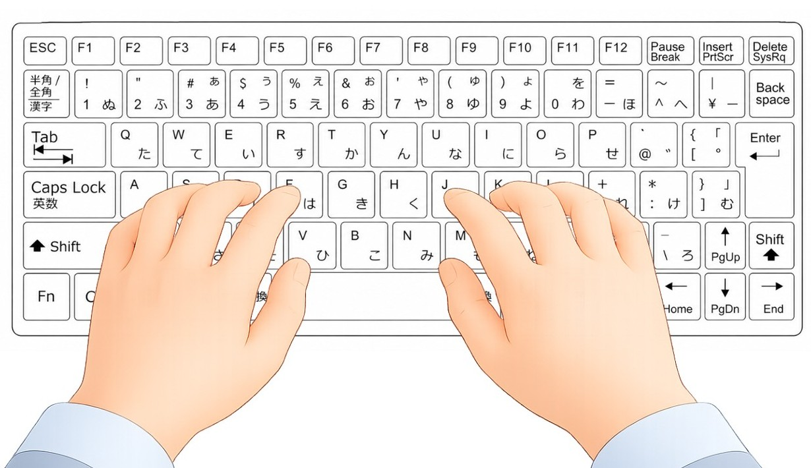

第1回：タイピング（文字入力）について
タイピング習得において最も大切なのは、「キーボードを見ながら文字入力する」という習慣を「やめる」練習をすることです。
自分の手首や指の置き場所をあらかじめ決めておくことで、ミスをした時の修正スピードが劇的に上がり、結果として全体の作業効率が向上します。キーボードを見ずに入力することを「タッチタイピング」といいます。
💡 ローマ字の裏技
アルファベットは26文字ありますが、実は「Q・X・C・L」の4文字を使わなくても、日本語の全ての文章は入力可能です。まずは残りの22文字の場所を覚えるだけで十分！と考えると、少し気が楽になりませんか？
1. ぱそトレ式ホームポジション
一般的な教材では「人差し指をFとJに置く」と教わりますが、ぱそトレ！ではさらにもう一つ、重要な要素を追加しています。
【 「A」に左手小指を置くこと 】
左手小指を「A」に固定し、さらに「Z」の担当指としても使ってみましょう。ぱそトレ式では「A・F・J」を軸にして指を配置します。
2. 手首の置き場所と固定
正しい位置を測るコツは、一度人差し指を「T」キーと「Y」キーに真っ直ぐ伸ばしてみることです。そのまま指をゆっくり手前に曲げて、自然に「F」と「J」に降りてきた場所が、あなたにとってのホームポジションです。
両手首は、親指がスペースキーに軽くかかる程度のリラックスした状態で置きます。

▲ 指を軽く曲げ、リラックスしてホームポジションに置いた状態
3. 負担を減らす「薬指」の活用術
「ー（ハイフン）」や「P」は一般的に小指で打つとされますが、初心者には負担が大きいです。ぱそトレ！では、右手薬指での打鍵をお勧めしています。右手人差し指を「J」に置いたまま薬指を動かすことで、基本位置を崩さずにタイピングを継続できます。